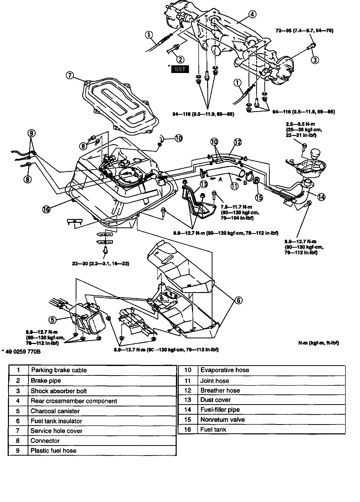
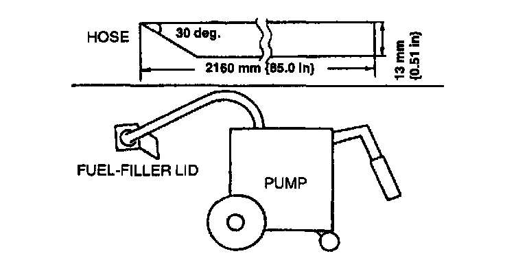
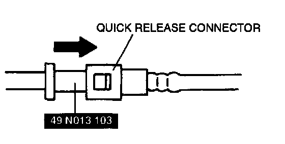
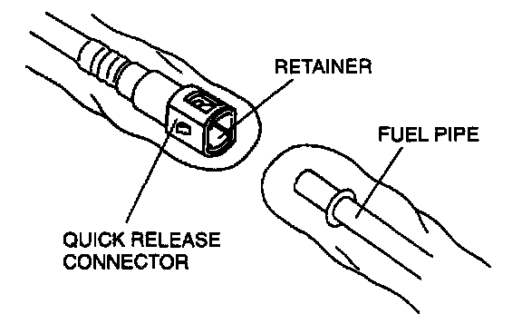
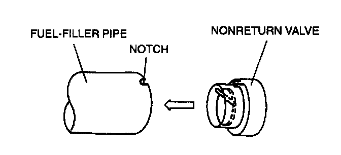
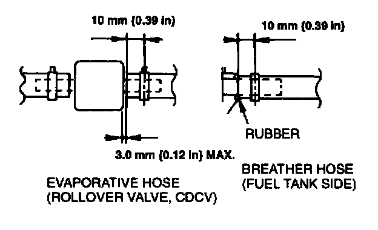
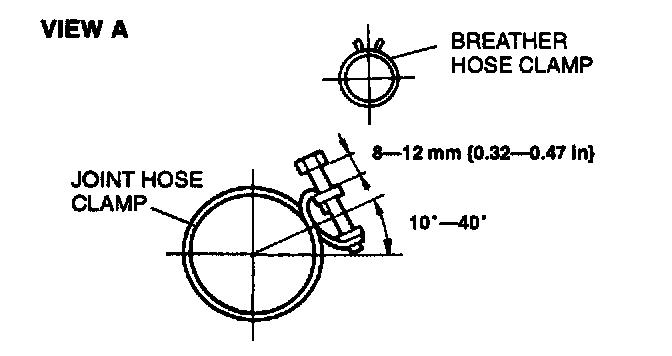
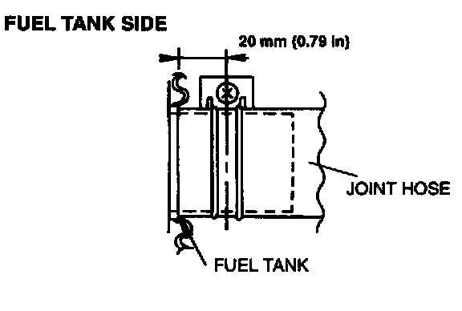
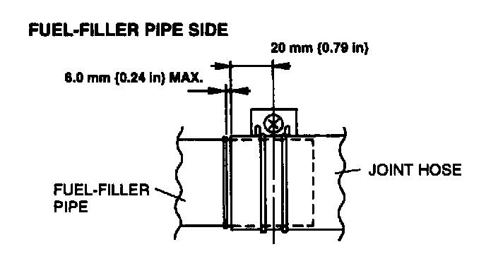
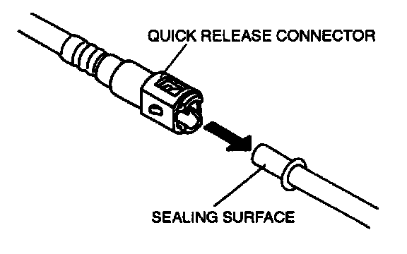

Fuel Tank Removal and Installation
WARNING: Repairing a fuel tank that has not been properly steam cleaned can be dangerous. Explosion or fire may cause death or serious injury. Always properly steam clean a fuel tank before repairing it.
1. Complete the "BEFORE REPAIR PROCEDURE".
2. Disconnect the negative battery cable.
3. Siphon the fuel from the fuel tank.
4. Remove the middle pipe.
5. Remove the propeller shaft.
6. Remove the power plant frame.
7. Remove in the order indicated in the table.
8. Install in the reverse order of removal.
9. Complete the "AFTER REPAIR PROCEDURE".
Fuel Drawing Note
1. Remove the fuel-filler cap and insert a hose into the fuel tank through the fuel-filler pipe.
2. Siphon the fuel into a container by using a fuel drawing pump.

NOTE: To make work easier, prepare a hose of following size.
Specification
Outer diameter: 13 mm (0.51 in)
Length: 2160 mm (85.0 in) or longer
Rear Crossmember Component Removal Note
1. Support the rear crossmember component by using a transmission jack.
2. Remove the rear crossmember mounting bolts and nuts.
3. Lower the rear crossmember component.
Plastic Fuel Hose Disassembly Note
CAUTION: The retainer must be replaced if removed from the fuel pipe without using the SST. Otherwise, effectiveness of the retainer will be reduced.
1. Inspect that the quick release connector joint area is free of foreign materials. Clean as necessary.

2. Set the SST as shown and push into the quick release connector to disconnect the plastic fuel hose.

3. Cover the disconnected quick release connector and fuel pipe to prevent them from being scratched or contaminated with foreign materials.

Nonreturn Valve Installation Note
- Align the nonreturn valve with the notch in the fuel-filler pipe as shown, then install.

Breather Hose, Evaporative Hose Installation Note
- Fit each hose onto the respective fittings within specification, and install clamps as shown.
Joint Hose Installation Note
- Fit the joint hose onto the respective fittings within specification, and install clamps as shown.

VIEW A

FUEL TANK SIDE

VIEW B

FUEL-FILLER PIPE SIDE
Plastic Fuel Hose Assembly Note
1. Inspect that the inside of the fuel pipe and the quick release connector is free of foreign materials and damage. Clean as necessary, taking care not to damage the sealing surfaces.

2. Push the quick release connector into the fuel pipe until a click is heard.
3. Pull the quick release connector by hand and verify that it is installed securely.